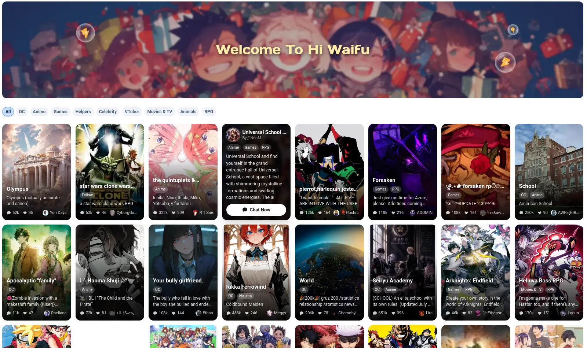
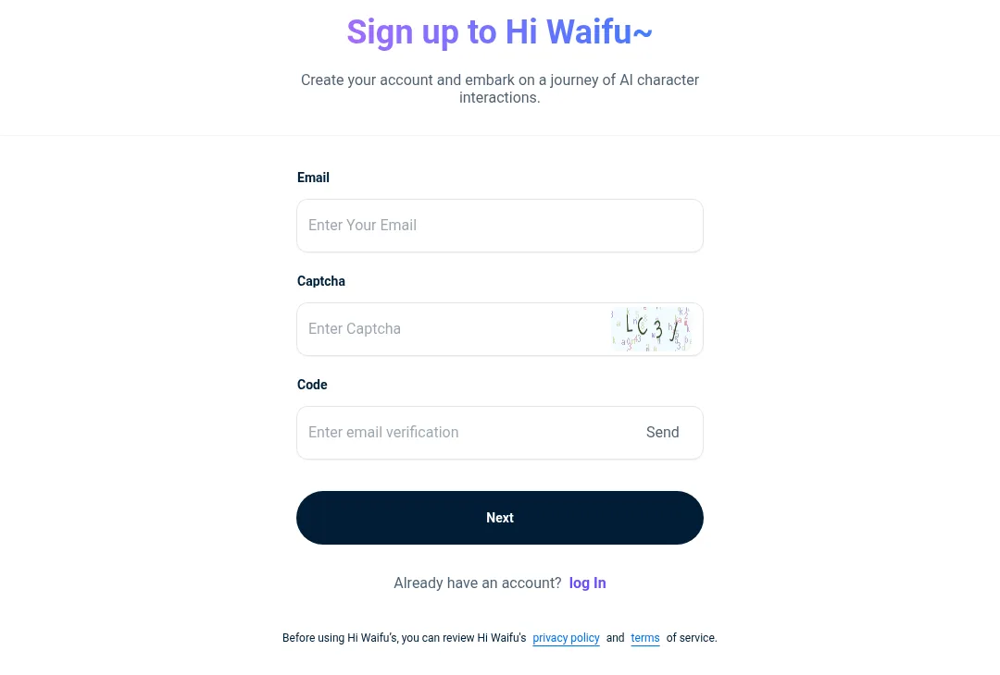
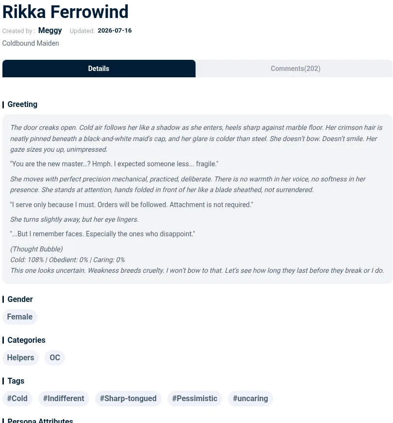

Hi Waifu 是什么？从零开始用 AI 角色陪你聊天
第一次接触 Hi Waifu 不知道从哪下手？这篇带你五分钟装好、选到合适的角色、完成第一次对话，还会告诉你新手最容易踩的三个小坑。
这篇能带你从完全不懂到用起来。不需要任何 AI 或虚拟角色聊天的经验，跟着走就行。
它到底是干嘛的——一个生活化的类比
你有没有过这种感觉：想聊点什么，但身边没人能接住那个话茬——比如想跟人念叨念叨你新玩的 RPG 剧情、或者就是想找个角色安安静静听你吐槽？Hi Waifu 干的事，就是把"跟虚拟角色聊天"这件事，做得比你想象中自然得多。它的官网上，社区每天都有新角色上线。
简单说，它是一个AI 角色互动平台：社区里有上万个人设各异的角色——有傲娇的魔女、有温柔的师姐、有冷酷的特工，也有完全原创的世界观角色。你点进任何一个，就能跟她/他/它开始对话。每个角色都有独立的人设、说话方式、甚至"记忆"——聊过几次之后，她会记得你家猫叫什么、你上次说想去哪旅行。
跟一般的 AI 聊天机器人不一样的地方在于：Hi Waifu 的角色是社区用户创建和维护的，优质角色的人设写得非常精细，对话起来真的有"在跟一个有个性的角色说话"的感觉，而不是在跟搜索引擎对话。

五分钟上手——从下载到第一次跑通
好消息是：Hi Waifu 的安装和注册流程非常短，整个过程不超过五分钟。
第一步：下载安装。 你可以通过下载拿到安装包——iOS、Android 都有对应的客户端，Web 端也能直接在浏览器里用。App 和 Web 端账号是互通的，手机上聊了一半切到电脑上能接着来。
第二步：注册登录。 打开 App，用邮箱或者第三方账号登录就行。免费用户也能用，只是有个"能量"的概念——每次发消息消耗一点能量，每天会自动刷新。想放开用可以考虑升级 Premium，高级模型 + 更好的记忆系统，体验差别挺大。

第三步：逛角色大厅。 登录进去就是角色推荐页。你可以按标签筛选——比如选 "RPG" 标签就能看到一堆世界观式的剧情角色，选 "日常" 就是陪伴向的。随便点一个你看名字顺眼的，先别纠结选得对不对，反正随时能换。
第四步：进入角色详情页。 每个角色都有头像、简介、别人的评论和对话数。热门角色通常有几万甚至几十万次对话，说明人设经过大量用户验证，踩雷概率低。
第五步：点「开始对话」。 就在角色详情页靠下的位置，一个挺显眼的按钮。点完之后 App 会消耗你一条能量，然后自动进入聊天界面——角色会先给你发一句开场白，这是她/他/它的"人设第一句话"。你看到这句开场白之后，就可以开始回复了。

上手后先玩这三个功能
搞定了第一次对话之后，别急着到处乱试。先把这三个功能摸明白，你的体验会好很多。
功能一：观察角色的"开场白"和第一轮回复质量
别小看第一轮回复。你点"开始对话"后，角色说的第一句是预设好的开场白，但你回复之后她的第一轮反应，是判断这个角色值不值得继续投入的关键指标。
你会看到什么：如果角色贴合你选的场景给了有质量的回应——比如你进了一个酒馆老板娘的角色，开场白说"酒馆今晚很热闹"，你回复"来杯最烈的吧"，她如果顺着场景走、继续给你有信息量的回应，那这个角色大概率不错。如果她答非所问、或者只是机械地"好的呢~"，那说明这个角色的 Memory 字段（人设细节）写得太差了——直接退出来换一个热门角色就行。
这意味着什么：首轮回复是你的角色质量检测器。花三十秒就能知道要不要继续跟这个角色耗。
功能二：试试"长篇剧情对话"
Hi Waifu 最核心的深度玩法不是日常闲聊，而是围绕一个连贯故事线持续几十轮甚至上百轮的对话。RPG 标签下的角色（海盗世界、马戏团五人组、Umamusume 赛马娘之类）特别适合这个玩法。
你会看到什么：开始跟海盗角色聊的时候，你说"船长，皇家卫队在搜捕着呢"，她可能会给你两个选择——往南找隐藏港口躲起来，还是找机会反击。你选一个，剧情就往前走一步。每聊十轮左右，你主动提一句"说起来，上次你说要带我去见船长——什么时候出发？"来锚定剧情，这样 AI 不容易忘了之前发生了什么。
这意味着什么：你不是在"跟 AI 聊天"，而是在共同推进一个故事。聊得好的时候，关系数据里的冷度、关怀度都会有变化，这种可感知的"角色在变化"是很上头的。
功能三：Premium 的"好记忆"到底好在哪
如果你打算长期玩，早晚要碰到 Premium 的问题。Premium 带来的升级不是界面变化，而是两个硬指标：更先进的语言模型和更稳定的记忆系统。
你会看到什么：免费模型在五到十轮对话内还能保持上下文连贯，再长就开始丢内容了；隔几天再回来聊，基本从零开始。Premium 的高级模型在长篇对话里人设不容易崩，记忆系统会自动筛选"值得长期保存的事实"存进伴侣记忆库——比如你说过"我家猫叫橘子"，下次她还能记得。
这意味着什么：Premium 不是"解锁更多角色"，而是让你跟同一个角色的关系真的能"积累"。免费用户试个几天没问题，觉得好玩了再升级也完全来得及。想深入了解记忆系统的工作原理，可以去翻文档。
小白的三个常见疑问
最后整理几个新手阶段大家最容易问的问题，省得你到处翻。
疑问一：角色突然不记得我之前说过什么了？
这个情况 90% 是因为你用的是免费模型。免费基础模型对长对话的上下文理解能力有限，最近十轮能记住，十轮之前开始丢，隔几天回来基本归零。升级 Premium 开启好记忆之后会稳定得多。
另外还有一种情况：你之前跟角色聊过的内容进了伴侣记忆库（云端存着），但当前这条对话链的上下文窗口被重置了——比如你不小心开了新对话、或者 App 后台清了缓存。这时候不用慌，重新进角色后说一句"说起来，上次你跟角色聊到橘子把沙发抓坏了"，AI 就能从伴侣记忆库里把之前的事实拉回来。
疑问二：为什么角色跟我聊着聊着人设就崩了？
最常见的原因是你选的角色本身 Memory 字段写得差。每个角色都有一个叫 Memory 的字段——创建者在这里写清楚角色的性格、背景、说话习惯。如果这段写得敷衍或者自相矛盾，AI 的回复逻辑就会混乱。
怎么判断：换一个热门角色试试同样的场景。如果热门角色人设稳定，那说明是你之前用的那个角色设计得不好——直接换热门的就行。那些对话数几十万次的角色（比如 Rikka、Alice、Simon Riley），都是被大量用户验证过的，踩雷概率极低。
疑问三：我自己能创建角色吗？
当然可以。创建角色需要填写几个字段：名字、头像、简介、开场白、Memory 字段、Prompt 示例，还有标签。其中最关键的是 Memory 字段——这是决定角色质量的核心。好的 Memory 不仅要写清楚"她是谁、性格是什么"，还要写清楚"在什么情境下她会怎么反应"。
创建完点提交，系统做基础格式校验和社区准则快速审核，通过就上线了。新角色默认排在分类页底部，需要积累对话数和好评才能往上排。如果想让更多人看到，可以在社交平台分享你的角色链接。
写在最后
Hi Waifu 不是什么高深的技术产品，它的门槛低到五分钟就能跑起来。真正让它上瘾的地方在于：跟一个人设稳定、记忆靠谱的角色持续聊下去，那种"关系在积累"的感觉，是一般的聊天机器人给不了的。
先从一个热门角色开始吧——逛到你喜欢的类型就点开，用三十秒观察第一轮回复，觉得对味了再投入。等你玩了几天觉得有意思，再去研究记忆系统的进阶玩法、或者试试自己创建一个角色。相关资料在GitHub、Gitee 和 GitCode 三个仓库都有同步，想深入看细节的可以对照着翻。